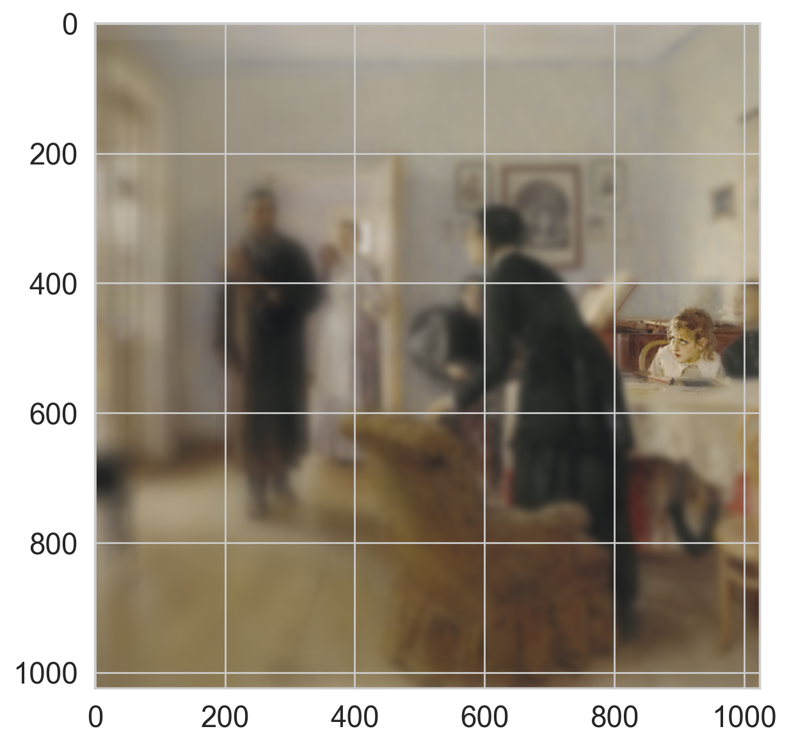
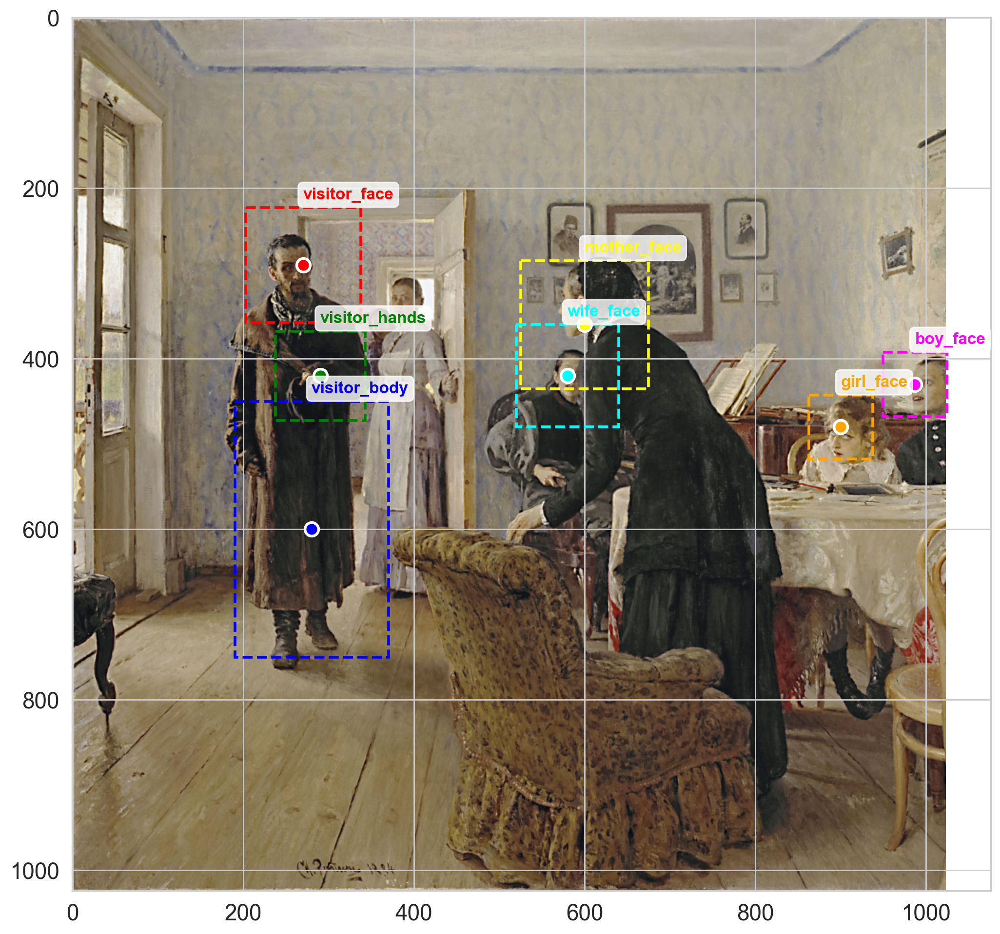
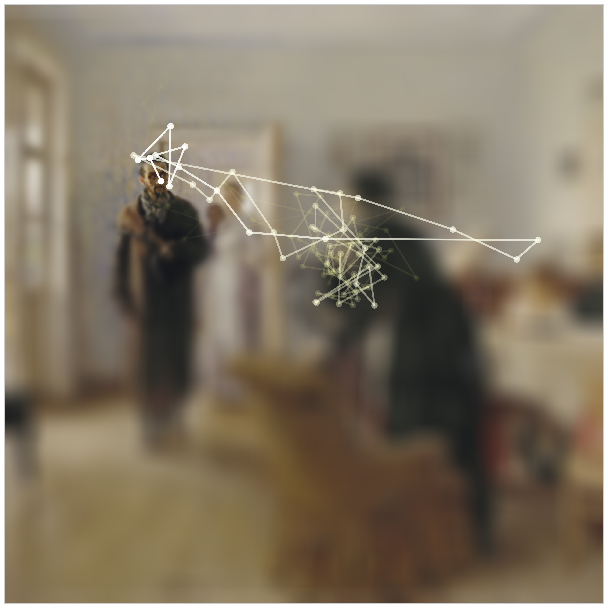

Retinotopic Mapping of Fixation Dynamics¶
Saccades are rapid, involuntary eye movements, a term once used for the restless motion of horses. In the 1960s, Alfred L. Yarbus showed that these movements are not incidental to vision but fundamental to it. Visual acquisition occurs between saccades, and when they are suppressed perception quickly collapses, showing that what may appear to be visual distraction is in fact necessary for seeing.
This notebook develops a reproducible computational demonstration of retinotopic image sampling during visual exploration. The objective is to simulate how perceptual resolution degrades with eccentricity as gaze shifts over a complex natural scene.
The workflow is organized in five stages: (1) configuration and data loading, (2) implementation of a spatially varying foveation transform, (3) definition and visualization of semantically meaningful regions of interest (ROIs), (4) generation of plausible fixation sequences, and (5) rendering of static and dynamic visual summaries of scanpath behavior.
This analysis is useful for linking model-centric image transformations to biologically inspired viewing strategies, and for producing interpretable visual material for downstream behavioral or machine-vision comparisons.
Reference: Alfred L. Yarbus, Eye Movements and Vision, trans. Basil Haigh (New York: Plenum Press, 1967).
Configuration and data loading¶
[1]:
import retinoto_py as fovea
args = fovea.Params(do_fovea=True, angle_start=-fovea.np.pi)
args
[1]:
Params(batch_size=32, num_workers=4, prefetch_factor=0, image_size=224, grid_size_ecc=161, grid_size_ang=309, do_mask=False, do_fovea=True, use_hexagonal_grid=True, rs_min=-3.5, rs_max=0.7, angle_start=-3.141592653589793, angle_margin=0.010166966516471823, mode='bilinear', padding_mode='zeros', model_name='convnext_base', num_epochs=20, subset_factor=1, optimizer_name='adamw', loss_name='CrossEntropyLoss', base_lr=1e-06, final_lr=1e-09, num_warmup_epochs=20, delta1=0.3, delta2=0.002, weight_decay=0.0001, label_smoothing=0.0005, do_full_training=True, do_augment=True, augment_proba=0.85, stochastic_depth_prob=0.6, seed=1998, shuffle=True, verbose=False)
Define the Spatial Resolution for the Study¶
The next code cell sets the spatial scale used throughout the notebook. Choosing a fixed image size ensures consistent coordinate geometry for ROI placement, fixation sampling, and visualization.
[ ]:
image_size_full = 512 # faster for testing
image_size_full = 1024 # for production
Load and Normalize the Reference Painting¶
As Yarbus did, we use a single, familiar image to illustrate the principles of retinotopic mapping: Ilya Repin’s An Unexpected Visitor (Ilya Repin, 1884), a particularly effective case for studying fixation dynamics. Repin’s painting is well suited to this purpose because its narrative and contextual richness strongly guide attention, making it a compelling example for examining the relation between perception and interpretation. The scene depicts a soldier returning from Siberian exile to his family, offering a structured visual situation in which viewers naturally search for explanatory details that help them interpret the event. Its broad recognition in Soviet culture meant that observers often approached it with prior expectations, allowing researchers to examine how previous knowledge shapes visual exploration. Its composition, with clearly differentiated figures and implied social relations, provides distinct focal points such as the mother’s greeting and the wife’s hesitation, which reveal how task-dependent instructions, including judgments about age or material conditions, systematically alter saccadic behavior.
The next cell imports the target image, checks channel consistency, and resizes it to the predefined square canvas. The printed tensor diagnostics provide a quick sanity check of dtype, shape, and value range before further processing.
[4]:
import torch
from torchvision.io import read_image
image_url = './images/unexpected-visitor.jpg'
full_image = read_image(image_url)/255.
three, H, W = full_image.shape
assert three == 3
from torchvision.transforms.functional import InterpolationMode, resize
full_image = resize(full_image, image_size_full, interpolation=InterpolationMode.BILINEAR, antialias=True)[:, :image_size_full, :image_size_full]
three, H, W = full_image.shape
full_image_np = torch.movedim(full_image, (1, 2, 0), (0, 1, 2)).numpy()
print(f"{type(full_image) = }, {full_image.dtype = }, {full_image.shape = }, {full_image.min()=}, {full_image.max()=}")
type(full_image) = <class 'torch.Tensor'>, full_image.dtype = torch.float32, full_image.shape = torch.Size([3, 1024, 1024]), full_image.min()=tensor(0.003), full_image.max()=tensor(1.000)
Step 4. Display the Reference Image¶
The next cell renders the resized image that will serve as the visual support for all fixation and foveation simulations. This baseline view allows direct comparison with transformed outputs.
[5]:
fig, ax = fovea.plt.subplots()
ax.imshow(full_image_np)
# ax.set_xticks([])
# ax.set_yticks([])
fig.set_facecolor(color='white')
Step 5. Implement and Test a Spatially Varying Foveation Operator¶
This cell implements a simple foveation model as a multi-scale blur approximation of retinal acuity falloff and applies it to one chosen fixation center.
A per-pixel sigma map is computed from the distance to the fixation point.
A small pyramid of blurred versions of the image is built over the relevant sigma range.
Each pixel is reconstructed by interpolating between the two blur levels that surround its sigma value.
This operation is used as a computational proxy for high-resolution foveal vision with lower-resolution periphery.
[ ]:
from torchvision.transforms import functional as TF
def apply_multiscale_blur(image, sigma_map, num_levels=6):
"""
Approximate spatially varying blur from a pyramid of uniformly blurred images.
Args:
image: Tensor of shape (C, H, W).
sigma_map: Tensor of shape (H, W) giving the target blur sigma at each pixel.
num_levels: Number of blur levels used to sample the sigma range.
"""
C, H, W = image.shape
# Determine the actual sigma range requested by the current fixation geometry.
sigma_min = max(float(sigma_map.min().item()), 1e-3)
sigma_max = max(float(sigma_map.max().item()), sigma_min)
# Build blur levels on a geometric grid so that low and high sigmas are both represented.
if num_levels <= 1 or sigma_max == sigma_min:
sigmas = [sigma_min]
else:
sigmas = fovea.np.geomspace(sigma_min, sigma_max, num=num_levels).tolist()
# The unblurred image is kept explicitly as the foveal endpoint.
blur_levels = [image]
sigma_levels = [0.0]
for sigma in sigmas:
kernel_size = int(6 * sigma) | 1
kernel_size = max(3, int(6 * sigma) | 1) # heuristic to ensure the blurring kernel is *just* large enough
blur_levels.append(TF.gaussian_blur(image, kernel_size, sigma=float(sigma)))
sigma_levels.append(float(sigma))
# Expand the sigma map across channels so that blending can be applied directly to the image tensor.
sigma_map_expanded = sigma_map.unsqueeze(0).expand(C, -1, -1)
result = torch.zeros_like(image)
# For each adjacent pair of blur levels, compute a linear interpolation weight.
# Pixels whose target sigma falls inside [sigma_low, sigma_high) are reconstructed
# by blending the two corresponding uniformly blurred images.
for i in range(len(sigma_levels) - 1):
sigma_low = sigma_levels[i]
sigma_high = sigma_levels[i + 1]
denom = max(sigma_high - sigma_low, 1e-12)
blend = torch.clamp((sigma_map_expanded - sigma_low) / denom, 0, 1)
in_range = (sigma_map_expanded >= sigma_low) & (sigma_map_expanded < sigma_high)
result += ((1 - blend) * blur_levels[i] + blend * blur_levels[i + 1]) * in_range
# The largest sigma is assigned directly to the coarsest blur level.
max_mask = sigma_map_expanded >= sigma_levels[-1]
result += blur_levels[-1] * max_mask
return result
def foveate_logpolar(image, center=None, eccentricity=2.0, r_min=.01, device='cpu'):
"""
Apply a simple retinotopic blur model centered on a fixation point.
The blur sigma increases linearly with eccentricity, so central vision remains sharp
while peripheral vision is progressively blurred.
"""
C, H, W = image.shape
image = image.to(device)
if center is None:
# Default center: geometric center of the image.
center = (W / 2, H / 2)
# Compute the eccentricity map, i.e. the distance of each pixel to the fixation point.
y, x = torch.meshgrid(
torch.arange(H, dtype=torch.float32, device=device),
torch.arange(W, dtype=torch.float32, device=device),
indexing='ij'
)
r = torch.sqrt((x - center[0])**2 + (y - center[1])**2)
# Convert eccentricity into a target blur sigma at each pixel.
sigma_map = (r + r_min) * eccentricity
return apply_multiscale_blur(image, sigma_map)
full_image_recode = foveate_logpolar(
full_image,
center=(900 / 1024 * image_size_full, 480 / 1024 * image_size_full),
eccentricity=.05,
device=args.device,
).cpu()
fig, ax = fovea.plt.subplots()
ax.imshow(torch.movedim(full_image_recode, (1, 2, 0), (0, 1, 2)).numpy())
<matplotlib.image.AxesImage at 0x13725bd90>

Visual interpretation of the foveated image¶
The transformed image should exhibit maximal detail near the selected fixation point and progressively stronger blur with increasing eccentricity. This radial gradient is the key qualitative signature of the implemented retinotopic approximation.
Step 6. Define and Visualize Semantic Regions of Interest (ROIs)¶
The next cell overlays manually defined ROIs corresponding to salient characters and body parts in the scene. These ROIs provide interpretable anchors for later stochastic fixation generation.
[7]:
fig, ax = fovea.plt.subplots(figsize=(12.8, 12.8))
ax.imshow(torch.movedim(full_image, (1, 2, 0), (0, 1, 2)).numpy())
rois_1024 = {
'visitor_face': (270, 290, 45, 45, 0.30), # Left side, upper - the man standing
'visitor_body': (280, 600, 60, 100, 0.05), # Visitor's torso and coat
'visitor_hands': (290, 420, 35, 35, 0.08), # Visitor's hands area
'mother_face': (600, 360, 50, 50, 0.20), # Center-right, the woman in black
'wife_face': (580, 420, 40, 40, 0.15), # Far right, woman standing
'boy_face': (987, 430, 25, 25, 0.12), # Lower center-right, boy at table
'girl_face': (900, 480, 25, 25, 0.10), # Bottom center, girl in foreground
# 'maid_face': (420, 320, 25, 25, 0.12), # NEW: Maid in doorway behind visitor
}
import matplotlib.patches as patches
colors = ['red', 'blue', 'green', 'yellow', 'cyan', 'magenta', 'orange']
for (roi_name, (cx, cy, sx, sy, weight)), color in zip(rois_1024.items(), colors):
# Convert normalized coordinates to pixels
center_x = cx
center_y = cy
# ROI size in pixels (3 standard deviations = ~99% of samples)
width_px = sx * 3
height_px = sy * 3
# Rectangle bottom-left corner
rect_x = center_x - width_px / 2
rect_y = center_y - height_px / 2
# Draw rectangle
rect = patches.Rectangle(
(rect_x, rect_y), width_px, height_px,
linewidth=2, edgecolor=color, facecolor='none', linestyle='--'
)
ax.add_patch(rect)
# Draw center point
ax.plot(center_x, center_y, 'o', color=color, markersize=10,
markeredgecolor='white', markeredgewidth=2)
# Add label
ax.text(center_x, rect_y - 10, roi_name,
color=color, fontsize=12, fontweight='bold',
bbox=dict(boxstyle='round,pad=0.3', facecolor='white', alpha=0.8))
print(f"{roi_name:20s}: center=({center_x:.0f}, {center_y:.0f}), size=({width_px:.0f}x{height_px:.0f}), weight={weight}")
visitor_face : center=(270, 290), size=(135x135), weight=0.3
visitor_body : center=(280, 600), size=(180x300), weight=0.05
visitor_hands : center=(290, 420), size=(105x105), weight=0.08
mother_face : center=(600, 360), size=(150x150), weight=0.2
wife_face : center=(580, 420), size=(120x120), weight=0.15
boy_face : center=(987, 430), size=(75x75), weight=0.12
girl_face : center=(900, 480), size=(75x75), weight=0.1

Visual interpretation of ROI overlays¶
The dashed rectangles and labeled centers should be spatially aligned with semantically relevant regions of the painting. If labels drift from their intended targets, fixation statistics and scanpath realism will degrade.
Step 7. Generate a Probabilistic Fixation Sequence¶
The following cell defines and samples a stochastic scanpath model using weighted ROI transitions (hazard_rate) and temporal smoothing (blend). Summary statistics are printed to verify plausible coordinate ranges and sequence length.
[8]:
import numpy as np
import random
three, H, W = full_image.shape
def generate_fixations_repin(width=W, height=H, num_fixations=300,
hazard_rate = .3, # chance to jump to new ROI
blend = 0., # 70% new ROI, 30% from previous position
seed=2018):
"""
Generate fixation points for Repin's "An Unexpected Visitor"
Based on Yarbus eye-tracking studies
Returns: list of (x, y) tuples in pixel coordinates
"""
np.random.seed(seed=seed)
random.seed(seed)
# Define regions of interest (ROI) in pixels
rois = {
'visitor_face': (270, 290, 45, 45, 0.30), # Left side, upper - the man standing
'visitor_body': (280, 600, 60, 100, 0.05), # Visitor's torso and coat
'visitor_hands': (290, 420, 35, 35, 0.08), # Visitor's hands area
'mother_face': (600, 360, 50, 50, 0.20), # Center-right, the woman in black
'wife_face': (580, 420, 40, 40, 0.15), # Far right, woman standing
'boy_face': (987, 430, 25, 25, 0.12), # Lower center-right, boy at table
'girl_face': (900, 480, 25, 25, 0.10), # Bottom center, girl in foreground
}
# Convert weights to probabilities
total_weight = sum(roi[4] for roi in rois.values())
roi_probs = [roi[4] / total_weight for roi in rois.values()]
roi_names = list(rois.keys())
fixations = []
# Start with initial fixation near center of visitor's face
current_roi = 'visitor_face'
cx, cy, sx, sy, _ = rois[current_roi]
x = int((cx + np.random.randn() * sx))
y = int((cy + np.random.randn() * sy))
fixations.append((np.clip(x, 0, width-1), np.clip(y, 0, height-1)))
for i in range(1, num_fixations):
# Decide whether to stay in current ROI or jump to another
if random.random() < hazard_rate:
# Choose next ROI based on weights
current_roi = np.random.choice(roi_names, p=roi_probs)
# Generate fixation within current ROI
cx, cy, sx, sy, _ = rois[current_roi]
# Add some temporal correlation (smooth pursuit)
prev_x, prev_y = fixations[-1]
# print(cx, cy, prev_x, prev_y)
# Blend between previous position and ROI center
target_x = blend * cx + (1 - blend) * prev_x
target_y = blend * cy + (1 - blend) * prev_y
# Add Gaussian noise
x = int((target_x + np.random.randn() * sx))
y = int((target_y + np.random.randn() * sy))
# Clip to image boundaries
fixations.append((np.clip(x, 0, width-1), np.clip(y, 0, height-1)))
return fixations
# Generate the fixations
fixations = generate_fixations_repin(width=W, height=H, num_fixations=300, seed=2018)
print("image size: ", H, W)
# Print first 20 fixations as example
print("First 20 fixations (x, y) in pixels:")
for i, (x, y) in enumerate(fixations[:20]):
print(f"{i+1:3d}: ({x:4d}, {y:4d})")
print(f"\nTotal fixations: {len(fixations)}")
# Statistics
xs = [f[0] for f in fixations]
ys = [f[1] for f in fixations]
print(f"\nStatistics:")
print(f"X range: {min(xs)} - {max(xs)} (mean: {np.mean(xs):.1f})")
print(f"Y range: {min(ys)} - {max(ys)} (mean: {np.mean(ys):.1f})")
image size: 1024 1024
First 20 fixations (x, y) in pixels:
1: ( 257, 316)
2: ( 353, 258)
3: ( 376, 273)
4: ( 382, 262)
5: ( 372, 238)
6: ( 338, 251)
7: ( 368, 277)
8: ( 407, 225)
9: ( 420, 282)
10: ( 372, 205)
11: ( 364, 207)
12: ( 380, 134)
13: ( 282, 151)
14: ( 269, 125)
15: ( 287, 156)
16: ( 302, 157)
17: ( 299, 199)
18: ( 299, 287)
19: ( 300, 251)
20: ( 302, 288)
Total fixations: 300
Statistics:
X range: 0 - 420 (mean: 148.4)
Y range: 78 - 786 (mean: 369.8)
Step 8. Inspect Individual Fixation Samples¶
The next two short cells extract one fixation index and a corresponding fixation history prefix. These checks validate indexing logic before trajectory rendering.
[9]:
i_fixation = 20
fixations[i_fixation]
[9]:
(np.int64(330), np.int64(279))
Intermediate check of fixation-history slicing¶
The next cell builds a trajectory prefix from the chosen index. This confirms that the history object passed to rendering functions has the expected structure and ordering.
[10]:
fixation_history = fixations[:i_fixation]
fixation_history[0][-1], fixation_history[1][-1]
[10]:
(np.int64(316), np.int64(258))
Step 9. Render a Foveated Scanpath Snapshot¶
The following cell constructs a full visualization function that combines foveation and trajectory overlay. It then generates a long fixation sequence and renders one late-stage snapshot to illustrate accumulated gaze dynamics.
[11]:
# crop_box = (124, 200, 600, 900) # Adjust as needed
def create_fig(fixation_history):
if len(fixation_history) == 0:
raise ValueError("fixation_history must contain at least one fixation")
full_image_recode = foveate_logpolar(
full_image,
center=(fixation_history[-1][0], fixation_history[-1][1]),
eccentricity=.05,
device=args.device,
).cpu()
fig, ax = fovea.plt.subplots(figsize=(12.8, 12.8))
ax.imshow(torch.movedim(full_image_recode, (1, 2, 0), (0, 1, 2)).numpy())
N_fix = len(fixation_history)
# Draw saccade lines between consecutive fixations
if N_fix > 1:
for i in range(N_fix - 1):
x1, y1 = fixation_history[i]
x2, y2 = fixation_history[i + 1]
# Calculate alpha for gradient effect (older = more transparent)
alpha = ((i + 1) / N_fix) ** 20.
# Calculate line width (thicker toward current fixation)
linewidth = 0.5 + (i / N_fix) * 2.5
# Color gradient from blue (old) to red (current)
color_progress = i / max(len(fixation_history) - 1, 1)
# Draw line segment
ax.plot([x1, x2], [y1, y2], '-',
color=fovea.plt.cm.hot(color_progress),
alpha=alpha,
linewidth=linewidth,
solid_capstyle='round')
# Plot trajectory trail
for i, (fx, fy) in enumerate(fixation_history):
# Calculate alpha (transparency) - older fixations are more transparent
alpha = ((i + 1) / N_fix) ** 20.
# Calculate size - older fixations are smaller
size = 2 + (i / N_fix) * 8 # 2 to 10
# Color gradient from blue (old) to red (current)
color_val = i / max(N_fix - 1, 1)
color = fovea.plt.cm.hot(color_val)
ax.plot(fx, fy, 'o',
color=color,
markersize=size,
alpha=alpha,
markeredgewidth=0)
ax.set_xticks([])
ax.set_yticks([])
fig.subplots_adjust(left=0, right=1, top=1, bottom=0)
return fig, ax
fixations = generate_fixations_repin(width=W, height=H, num_fixations=800, seed=2025, blend=0.5, hazard_rate=0.06)
i_fixation = 700
fig, ax = create_fig(fixations[:i_fixation])
fixations[i_fixation]
[11]:
(np.int64(293), np.int64(237))

Visual interpretation of the scanpath snapshot¶
The final fixation should appear as the most visually dominant point, while earlier saccades are progressively attenuated. This creates a readable temporal gradient and highlights the interaction between gaze history and local acuity.
Step 10. Export an Animation of the Full Fixation Sequence¶
The next cell iterates over fixation prefixes, renders each frame, and compiles them into an MP4 video for dynamic inspection and dissemination.
[12]:
from pathlib import Path
import tempfile
videoname = args.figures_folder / '50_fixation_sequence.mp4'
# %rm {videoname} # FORCING RECOMPUTE
if not videoname.exists():
n_frame = len(fixations)
fnames = []
with tempfile.TemporaryDirectory(prefix='retinotopy_frames_') as tmpdir:
tmpdir_path = Path(tmpdir)
for i_frame in fovea.tqdm(range(1, n_frame)):
fname = tmpdir_path / f'frame_{i_frame:04d}.png'
fig, ax = create_fig(fixations[:i_frame])
fig.savefig(fname, dpi=100, pad_inches=0, edgecolor=None)
fnames.append(str(fname))
fovea.plt.close(fig)
mp4name = fovea.make_mp4(videoname, fnames, fps=4)
# mp4name = make_mp4(videoname, fnames, fps=16)
Visual interpretation of the generated animation¶
The exported video should show a coherent temporal accumulation of fixations, with the most recent gaze location receiving maximal effective acuity. This dynamic view is useful for evaluating whether ROI transition probabilities and temporal smoothing produce plausible scanpath behavior.
Appendix: version of the libraries that were used¶
The final code cell reports package and runtime versions. This supports strict reproducibility and simplifies cross-platform troubleshooting.
[13]:
%load_ext watermark
%watermark -i -h -m -v -p numpy,torch,matplotlib -r -g -b
Python implementation: CPython
Python version : 3.14.6
IPython version : 9.10.0
numpy : 2.4.2
torch : 2.10.0
matplotlib: 3.10.8
Compiler : Clang 21.0.0 (clang-2100.0.123.102)
OS : Darwin
Release : 25.5.0
Machine : arm64
Processor : arm
CPU cores : 10
Architecture: 64bit
Hostname: obiwan.local
Git hash: 45670b4fc6c70860f7622b9b91ce92bc1a562f75
Git repo: https://github.com/laurentperrinet/retinoto_py
Git branch: main